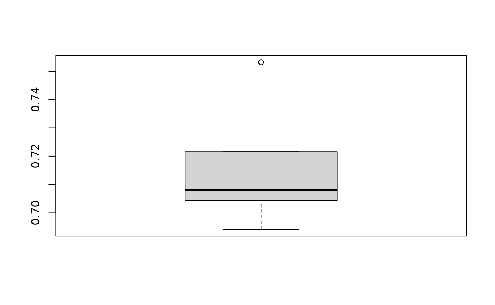

2 Evaluation using TrioR
Source:vignettes/v02_Evaluation_using_Trio.Rmd
v02_Evaluation_using_Trio.RmdImport microbiome data
TrioR can take datasets provided by users. To
demonstrate, its ability to take user-provided datasets, we’ll be using
a microbiome dataset called Lubomski obtained from the
PD16Sdata package. The following code will import the
Lubomksi data into R.
lubomski_microbiome_data.Rdata contains two data objects:
x and lubomPD. x is a 575 by 1192
matrix containing the abundance of 1192 microbial taxa for 575 samples.
lubom_pd is a factor vector of binary patient classes for
575 samples where where 1 represents PD and
0 represents HC.
# import the microbiome data
data("lubomski_microbiome_data", package = "BenchHub")
# check the dimension of the microbiome matrix
dim(x)## [1] 575 1192
# check the length of the patient status
length(lubomPD)## [1] 575The task we’ll be evaluating using TrioR is a binary
classification task where each sample is either a Parkinson’s Disease
(PD) patient or Healthy Control (HC). Once the data are ready to be
inputted to TrioR, we can load TrioR.
Initialise a TrioR object
To initialise a TrioR object, we use a new() method.
trio <- Trio$new(data = x, datasetID = "lubomski_microbiome")Next we will use this microbiome data to illustrate two examples, 1) evaluation with cross validation, 2) evaluation without cross validation.
Cross validation - using the trioR split function
In this example, we show a typical classification scenario to classify the patient status, where we need to split the data into training and testing set.
Step 1: Add a metric to it using Trio$addMetric()
Users can use existing evaluation functions by specifying
metric, and can name their evaluation metric by specifying
name. Since the evaluation task is a classification task,
we chose balanced accuracy, using the existing function bundled in
BenchHub, and named it Balanced Accuracy.
# add a metric to the Trio object
trio$addMetric(name = "Balanced Accuracy", metric = balAccMetric)Step 2: Add auxiliary data to the TrioR object using
Trio$addAuxData
The auxiliary data is the patient status, which is the
lubomPD vector that we extracted from the
Lubomski data above. Similar to adding a metric, users can
name their auxiliary data by specifying name. Note that
users need to specify the evaluation metric to be used through the
metrics argument, which has to match the evaluation metric
added to the TrioR object.
# add auxiliary data to the Trio object
# name is the user-defined name, can be anything
# auxData is the value of the auxiliary data
# metric needs to be same name of the metric that has been added to the Trio object
trio$addAuxData(
name = "patient_status", auxData = lubomPD, metrics = "Balanced Accuracy"
)If users want to get evaluation metrics from the TrioR
object, they can use the getMetrics function by referring
the name of auxData.
# get the metric from the Trio object
metrics <- trio$getMetrics("patient_status")Step 3: Obtain relevant data for the model. To build a model, the
following code will extract the data matrix and patient status outcome
from TrioR object.
# get the gold standard from the Trio object
x <- trio$data
y <- trio$getAuxData("patient_status")Step 4: For repeated cross-validation, the split()
function will split the y vector (i.e.,
auxData) into the number of folds and repeats users want.
In this case we used n_fold = 2 and
n_repeat = 5 (i.e., 2-fold cross-validation with 10
repeats). Then users can get cross-validation indices
(cv_ind) for each sample, through
splitIndices. This gives a simple list where each element
represents a combination of folds and repeats for each sample.
# get train and test indices
trio$split(y = y, n_fold = 2, n_repeat = 5)
cv_ind <- trio$splitIndicesStep 5: Build the classification model and evaluate. We can now use a for loop to cross-validate evaluation results.
Using the cv_ind, user can subset to training and test
data. As an example, we build a LASSO regression model as a
classification model on the training data, then make predictions on the
test data.
Once we get the prediction, we pass the pred vector to
TrioR and ref to the name of auxData
(patient_status = pred). This tells the
evaluate() function to compare the pred vector
with auxData patient_status stored in the
TrioR object. It will then computes the balanced accuracy,
because this is the metric we have specified.
set.seed(1234)
result <- data.frame()
# loop through the 2 folds x 5 repeats = 10 runs
for (i in seq_along(cv_ind)) {
train_id <- cv_ind[[i]]
x_train <- x[train_id, ]
x_test <- x[-train_id, ]
y_train <- y[train_id]
y_test <- y[-train_id]
# find the best lambda for LASSO regression
cv_lasso <- cv.glmnet(as.matrix(x_train), y_train,
alpha = 1, family = "binomial"
)
lam <- cv_lasso$lambda.1se
# fit a model with the best lambda on training data
fit <- glmnet(x_train, y_train, alpha = 1, lambda = lam, family = "binomial")
# evaluate the model on test data
pred <- predict(fit, x_test, s = "lambda.min", type = "class")
pred <- as.factor(as.vector(pred))
# get the chosen evaluation metric from the Trio
eval_res <- trio$evaluate(
list(lasso = list(patient_status = pred)),
splitIndex = i
)
# keep track of the repeat and fold information
eval_res$track <- names(cv_ind)[[i]]
result <- rbind(result, eval_res)
}After cross-validation, we can visualise cross-validation results by averaging results across folds within each repeats.
result$fold <- unlist(lapply(strsplit(result$track, ".", fixed = TRUE), `[`, 1))
result$repeats <- unlist(lapply(strsplit(result$track, ".", fixed = TRUE), `[`, 2))
result <- result %>%
dplyr::group_by(datasetID, method, auxData, metric, repeats) %>%
dplyr::summarize(result = mean(result))## `summarise()` has grouped output by 'datasetID', 'method', 'auxData', 'metric'.
## You can override using the `.groups` argument.
# visualise the result
boxplot(result$result)
# look at the format of the result output
result## # A tibble: 5 × 6
## # Groups: datasetID, method, auxData, metric [1]
## datasetID method auxData metric repeats result
## <chr> <chr> <chr> <chr> <chr> <dbl>
## 1 lubomski_microbiome lasso patient_status Balanced Accuracy Rep1 0.706
## 2 lubomski_microbiome lasso patient_status Balanced Accuracy Rep2 0.733
## 3 lubomski_microbiome lasso patient_status Balanced Accuracy Rep3 0.725
## 4 lubomski_microbiome lasso patient_status Balanced Accuracy Rep4 0.737
## 5 lubomski_microbiome lasso patient_status Balanced Accuracy Rep5 0.733Without cross validation
In this example, we show a simpler case without cross validation, where we have a prediction that we want to compare with the ground truth directly. For example, we may have simulated a single-cell count matrix and want to compare with an experimental count matrix on various attributes.
Here, we use the microbiome dataset to demonstrate the above case.
Step 1: Simulate a matrix of the same size as the microbiome data
using negative binomial.
Step 2: Define a function that calculate the sparsity of a given
matrix.
Step 3: Define a metric that compare difference of two values.
Step 4: Evaluate the difference in sparsity of the microbiome data and
the simulated data.
set.seed(1)
# generate a simulated matrix
sim <- rnbinom(nrow(x) * ncol(x), size = 1, mu = 1)
sim <- Matrix(sim, nrow = nrow(x), ncol = ncol(x))
# function that calculate the sparsity of a matrix
calc_sparsity <- function(data) {
sparsity <- sum(data == 0) / length(data)
return(sparsity)
}
# metric that compare the difference of two values
calc_diff <- function(pred, gt) {
return(gt - pred)
}
# add metric that we just defined
trio$addMetric(name = "Difference", metric = calc_diff)
# calculate the sparsity of the data, and then input into the auxillary data
trio$addAuxData(name = "Sparsity", auxData = calc_sparsity(x), metrics = "Difference")
# because we used negative binomial to simulate a matrix
# we will name the method as "negative binomial"
# then calculate the sparsity of the simulated matrix and compare with the Sparsity auxiliary data
eval_res <- trio$evaluate(
list(negative_binomial = list(Sparsity = calc_sparsity(sim)))
)
eval_res## # A tibble: 1 × 5
## datasetID method auxData metric result
## <chr> <chr> <chr> <chr> <dbl>
## 1 lubomski_microbiome negative_binomial Sparsity Difference 0.323From the evaluation result, we see there is a 0.32 difference in the sparsity between the microbiome data and the data simulated with negative binomial.
Importing result to BenchmarkInsights
The result dataframe obtained from Trio evaluation can be passed to BenchmarkInsights for subsequent visualisation. BenchmarkInsights is another structure in BenchHub that provide a list of functions to analyse and visualise the benchmarking results from multiple perspectives.
Note, to make the result dataframe compatible for BenchmarkInsights, please make sure the dataframe is in the format shown below, where the column names are “datasetID”, “method”, “auxData”, “metric” , “result”, and that there is one row for each result.
# in the with cross validation result, we need to average the results from multiple repeats to give one value
result <- result %>%
dplyr::group_by(datasetID, method, auxData, metric) %>%
dplyr::summarize(result = mean(result))## `summarise()` has grouped output by 'datasetID', 'method', 'auxData'. You can
## override using the `.groups` argument.
result <- rbind(result, eval_res)
result## # A tibble: 2 × 5
## # Groups: datasetID, method, auxData [2]
## datasetID method auxData metric result
## <chr> <chr> <chr> <chr> <dbl>
## 1 lubomski_microbiome lasso patient_status Balanced Accuracy 0.727
## 2 lubomski_microbiome negative_binomial Sparsity Difference 0.323Please see Vignette xxxxx for the details on the visualisations and functions in BenchmarkInsights.
Session Info
## R version 4.4.3 (2025-02-28)
## Platform: x86_64-pc-linux-gnu
## Running under: Ubuntu 24.04.2 LTS
##
## Matrix products: default
## BLAS: /usr/lib/x86_64-linux-gnu/openblas-pthread/libblas.so.3
## LAPACK: /usr/lib/x86_64-linux-gnu/openblas-pthread/libopenblasp-r0.3.26.so; LAPACK version 3.12.0
##
## locale:
## [1] LC_CTYPE=C.UTF-8 LC_NUMERIC=C LC_TIME=C.UTF-8
## [4] LC_COLLATE=C.UTF-8 LC_MONETARY=C.UTF-8 LC_MESSAGES=C.UTF-8
## [7] LC_PAPER=C.UTF-8 LC_NAME=C LC_ADDRESS=C
## [10] LC_TELEPHONE=C LC_MEASUREMENT=C.UTF-8 LC_IDENTIFICATION=C
##
## time zone: UTC
## tzcode source: system (glibc)
##
## attached base packages:
## [1] stats graphics grDevices utils datasets methods base
##
## other attached packages:
## [1] glmnet_4.1-8 Matrix_1.7-2 lubridate_1.9.4 forcats_1.0.0
## [5] stringr_1.5.1 dplyr_1.1.4 purrr_1.0.4 readr_2.1.5
## [9] tidyr_1.3.1 tibble_3.2.1 tidyverse_2.0.0 BenchHub_0.0.1
## [13] ggplot2_3.5.1
##
## loaded via a namespace (and not attached):
## [1] gridExtra_2.3 sandwich_3.1-1 rlang_1.1.5
## [4] magrittr_2.0.3 multcomp_1.4-28 polspline_1.1.25
## [7] compiler_4.4.3 survAUC_1.3-0 systemfonts_1.2.1
## [10] vctrs_0.6.5 reshape2_1.4.4 quantreg_6.00
## [13] shape_1.4.6.1 pkgconfig_2.0.3 fastmap_1.2.0
## [16] backports_1.5.0 utf8_1.2.4 ggstance_0.3.7
## [19] rmarkdown_2.29 tzdb_0.4.0 ragg_1.3.3
## [22] MatrixModels_0.5-3 xfun_0.51 cachem_1.1.0
## [25] jsonlite_1.9.1 broom_1.0.7 cluster_2.1.8
## [28] R6_2.6.1 bslib_0.9.0 stringi_1.8.4
## [31] rpart_4.1.24 jquerylib_0.1.4 cellranger_1.1.0
## [34] iterators_1.0.14 Rcpp_1.0.14 knitr_1.49
## [37] zoo_1.8-13 base64enc_0.1-3 parameters_0.24.2
## [40] timechange_0.3.0 splines_4.4.3 nnet_7.3-20
## [43] tidyselect_1.2.1 rstudioapi_0.17.1 yaml_2.3.10
## [46] codetools_0.2-20 curl_6.2.1 lattice_0.22-6
## [49] plyr_1.8.9 withr_3.0.2 bayestestR_0.15.2
## [52] evaluate_1.0.3 foreign_0.8-88 desc_1.4.3
## [55] survival_3.8-3 pillar_1.10.1 foreach_1.5.2
## [58] checkmate_2.3.2 insight_1.1.0 generics_0.1.3
## [61] hms_1.1.3 munsell_0.5.1 scales_1.3.0
## [64] glue_1.8.0 rms_7.0-0 Hmisc_5.2-2
## [67] tools_4.4.3 data.table_1.17.0 SparseM_1.84-2
## [70] fs_1.6.5 mvtnorm_1.3-3 grid_4.4.3
## [73] datawizard_1.0.1 colorspace_2.1-1 nlme_3.1-167
## [76] googlesheets4_1.1.1 patchwork_1.3.0 performance_0.13.0
## [79] htmlTable_2.4.3 googledrive_2.1.1 splitTools_1.0.1
## [82] Formula_1.2-5 cli_3.6.4 textshaping_1.0.0
## [85] gargle_1.5.2 gtable_0.3.6 ggcorrplot_0.1.4.1
## [88] ggsci_3.2.0 sass_0.4.9 digest_0.6.37
## [91] ggrepel_0.9.6 TH.data_1.1-3 htmlwidgets_1.6.4
## [94] farver_2.1.2 htmltools_0.5.8.1 pkgdown_2.1.1
## [97] lifecycle_1.0.4 dotwhisker_0.8.3 MASS_7.3-64